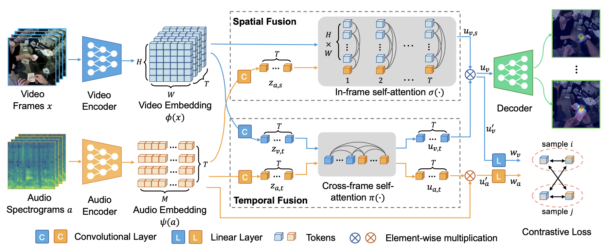

Egocentric gaze anticipation problem setting. $\tau_o$ denotes the observation time, and $\tau_a$ denotes the anticipation time. Given the video frames and audio of the Input Video Sequence, we aim to predict the gaze fixation distribution for the time steps in the Gaze Anticipation Sequence. Green dots indicate the gaze targets in future frames and the heatmap shows the gaze anticipation result from our model.
Abstract
Egocentric gaze anticipation serves as a key building block for the emerging capability of Augmented Reality. Notably, gaze behavior is driven by both visual cues and audio signals during daily activities. Motivated by this observation, we introduce the first model that leverages both the video and audio modalities for egocentric gaze anticipation. Specifically, we propose a Contrastive Spatial-Temporal Separable (CSTS) fusion approach that adopts two modules to separately capture audio-visual correlations in spatial and temporal dimensions, and applies a contrastive loss on the re-weighted audio-visual features from fusion modules for representation learning. We conduct extensive ablation studies and thorough analysis using two egocentric video datasets: Ego4D and Aria, to validate our model design. We also demonstrate improvements over prior state-of-the-art methods. Moreover, we provide visualizations to show the gaze anticipation results and provide additional insights into audio-visual representation learning.
Method

Overview of the proposed model. The video embeddings $\phi(x)$ and audio embeddings$\psi(a)$ are obtained by two transformer-based encoders. We then model the correlations of visual and audio embeddings using two separate branches -- (1) spatial fusion, which learns the spatial co-occurence of audio signals and visual objects in each frame, and (2) temporal fusion, which captures the temporal correlations and possible gaze movement. A contrastive loss is adopted to facilitate audio-visual representation learning. We input the fused embeddings into a decoder for final gaze anticipation results.
Demo Video
Cite
If you find this work useful in your own research, please consider citing:
Contact
For questions about paper, please contact bolin dot lai at gatech dot edu